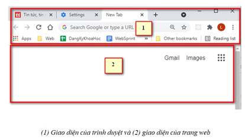
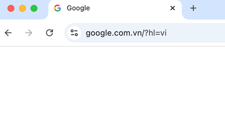
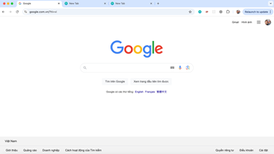
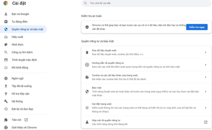
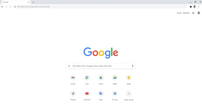
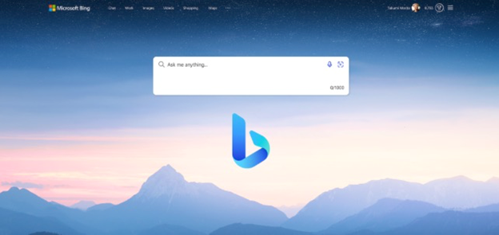

2.1 Sử dụng trình duyệt web:
2.1.1 Trình duyệt web là gì?
Trình duyệt web (web browser) là một ứng dụng giúp người dùng truy cập và duyệt các trang web trên Internet. Các trang web thường chứa văn bản, hình ảnh, video, và các liên kết đến những trang web khác. Một số trình duyệt web phổ biến bao gồm:
Một số icon của trình duyệt web
2.1.2 Các thành phần cơ bản của trình duyệt web

Thanh địa chỉ:
· Nơi bạn nhập địa chỉ trang web (URL). Ví dụ: "www.google.com".
· Có thể sử dụng để tìm kiếm thông tin nếu trình duyệt hỗ trợ tích hợp công cụ tìm kiếm.
Nút điều hướng (Back, Forward, Reload)
· Back: Quay lại trang web trước đó.
· Forward: Tiến đến trang tiếp theo (sau khi nhấn Back).
· Reload/Refresh: Tải lại trang web hiện tại.

Các nút điều hướng trên trình duyệt Chrome, bao gồm nút quay lại (Back), nút tới (Forward), và nút làm mới (Reload).
Tab (Thẻ trang)
· Có thể mở nhiều trang web trong các thẻ (tab) khác nhau để duyệt cùng lúc. Việc này giúp bạn quản lý các trang mà không cần mở nhiều cửa sổ trình duyệt.
· Để mở một tab mới, nhấn vào biểu tượng "+" bên cạnh thẻ hiện tại hoặc nhấn tổ hợp phím Ctrl + T.

Trình duyệt với nhiều thẻ trang được mở cùng lúc.
Bookmarks (Dấu trang)
Dấu trang giúp bạn lưu lại các trang web yêu thích để truy cập nhanh sau này. Bạn có thể nhấn vào biểu tượng ngôi sao trên thanh địa chỉ để lưu trang web vào danh sách dấu trang.
Menu cài đặt
Trình duyệt có một menu để quản lý các cài đặt khác nhau, từ việc quản lý lịch sử duyệt web đến tùy chỉnh giao diện. Bạn có thể truy cập menu cài đặt bằng cách nhấn vào biểu tượng ba dấu chấm hoặc ba gạch ngang ở góc trên cùng bên phải của trình duyệt.

Menu cài đặt của trình duyệt Google Chrome.
2.1.3 Các bước cơ bản khi sử dụng trình duyệt web
Bước 1: Mở trình duyệt
Bước 2: Truy cập trang web
Bước 3: Sử dụng công cụ tìm kiếm
Ví dụ minh họa:
Bước 4: Duyệt web
Bước 5: Quản lý các tab
Bước 6: Sử dụng dấu trang (Bookmarks)
Chế độ ẩn danh (Incognito Mode)
Chế độ ẩn danh giúp duyệt web mà không lưu lại lịch sử duyệt web, cookie, và thông tin trang web. Để mở chế độ ẩn danh trên Google Chrome, nhấn tổ hợp phím Ctrl + Shift + N.
Tải xuống tệp tin
Khi bạn nhấp vào một liên kết để tải xuống (download), trình duyệt sẽ tự động tải tệp đó về máy tính của bạn. Bạn có thể kiểm tra tệp đã tải xuống trong thư mục Downloads hoặc trên thanh tải xuống ở phía dưới trình duyệt.
Lưu mật khẩu
Trình duyệt có thể lưu mật khẩu của bạn để lần sau không cần nhập lại. Bạn có thể quản lý mật khẩu đã lưu trong mục Cài đặt > Quản lý mật khẩu của trình duyệt.
Tiện ích mở rộng (Extensions)
Bạn có thể cài đặt thêm các tiện ích mở rộng (extensions) để tăng cường chức năng của trình duyệt. Ví dụ, tiện ích AdBlock giúp chặn quảng cáo, Grammarly hỗ trợ kiểm tra ngữ pháp khi viết.
2.1.5 Mẹo sử dụng web hiệu quả
Sử dụng phím tắt:
· Ctrl + T: Mở tab mới.
· Ctrl + W: Đóng tab hiện tại.
· Ctrl + L: Chọn thanh địa chỉ để nhập URL.
· Ctrl + D: Thêm dấu trang cho trang hiện tại.
Xóa lịch sử duyệt web:
Để xóa lịch sử duyệt web, nhấn Ctrl + Shift + Delete, chọn dữ liệu muốn xóa (lịch sử, cookie, cache), và nhấn Xóa.
Tìm kiếm nhanh trong trang:
Để tìm một từ hay cụm từ cụ thể trong trang web đang mở, nhấn Ctrl + F và nhập từ cần tìm.
2.1.6 An toàn khi sử dụng web
Tránh truy cập các trang web không an toàn:
Các trang web an toàn thường có biểu tượng ổ khóa trên thanh địa chỉ và bắt đầu bằng https://. Tránh nhập thông tin cá nhân trên các trang không có ký tự "s" trong "https".
Cẩn thận với các liên kết lạ:
Không nhấp vào các liên kết trong email hoặc trang web mà bạn không rõ nguồn gốc.
Cài đặt tiện ích bảo mật:
Sử dụng các tiện ích như uBlock Origin để chặn quảng cáo và HTTPS Everywhere để tăng cường bảo mật khi duyệt web.
2.1.7 Công cụ tìm kiếm phổ biến
Trong thời đại số hóa ngày nay, việc tìm kiếm thông tin trên web là một kỹ năng vô cùng quan trọng. Với sự phong phú của thông tin, việc sử dụng các công cụ tìm kiếm hiệu quả và áp dụng các kỹ năng tìm kiếm thông minh sẽ giúp bạn dễ dàng tiếp cận các nguồn tài liệu, dữ liệu và thông tin mình cần một cách nhanh chóng và chính xác.
Google:
Google là công cụ tìm kiếm phổ biến nhất hiện nay với khả năng lập chỉ mục (index) và xếp hạng hàng tỷ trang web trên Internet.
Giao diện trang tìm kiếm của Google.
Bing:
Bing là công cụ tìm kiếm của Microsoft. Nó có giao diện đẹp, cung cấp nhiều tính năng tương tự Google và tích hợp sâu vào hệ điều hành Windows.

Giao diện trang tìm kiếm Bing.
Yahoo Search:
Yahoo từng là một trong những công cụ tìm kiếm phổ biến nhất. Hiện nay, Yahoo sử dụng công nghệ tìm kiếm của Bing.
DuckDuckGo:
DuckDuckGo là công cụ tìm kiếm bảo mật, không theo dõi hoạt động tìm kiếm của người dùng và không lưu lịch sử tìm kiếm. Công cụ này được ưa chuộng bởi những người dùng quan tâm đến quyền riêng tư.
Baidu:
Baidu là công cụ tìm kiếm phổ biến nhất ở Trung Quốc, tập trung vào các trang web và nội dung tiếng Trung.
2.1.8 Kĩ năng tìm kiếm thông tin hiểu quả trên web
a. Sử dụng từ khóa chính xác
Để kết quả tìm kiếm chính xác và liên quan hơn, bạn cần chọn từ khóa cụ thể và chính xác. Ví dụ:
b. Sử dụng các toán tử tìm kiếm nâng cao
1. Toán tử AND:
o Google mặc định sẽ hiểu tất cả các từ bạn nhập vào như điều kiện AND. Ví dụ: "máy tính AND điện thoại" sẽ trả về các kết quả chứa cả hai từ "máy tính" và "điện thoại".
2. Toán tử OR:
o Sử dụng OR để tìm kiếm các trang chứa ít nhất một trong số các từ khóa. Ví dụ: "máy tính OR điện thoại" sẽ trả về các trang chứa "máy tính" hoặc "điện thoại" hoặc cả hai.
3. Toán tử dấu ngoặc kép (" "):
o Để tìm kiếm một cụm từ chính xác, hãy đặt nó trong dấu ngoặc kép. Ví dụ: "lập trình web với PHP" sẽ chỉ trả về các kết quả chứa cụm từ chính xác đó.
4. Toán tử dấu trừ (-):
o Sử dụng dấu trừ để loại bỏ các kết quả có chứa một từ khóa nhất định. Ví dụ: "điện thoại -Samsung" sẽ loại bỏ các kết quả liên quan đến Samsung.
5. Toán tử site::
Để giới hạn kết quả tìm kiếm trong một trang web cụ thể, sử dụng toán tử site. Ví dụ: "site.net công nghệ" sẽ trả về các kết quả liên quan đến công nghệ chỉ từ trang vnexpress.net.
6. Toán tử filetype::
o Tìm kiếm các tệp với định dạng cụ thể. Ví dụ: "báo cáo tài chính filetype" sẽ trả về các kết quả là tệp PDF liên quan đến báo cáo tài chính.
c. Sử dụng công cụ tìm kiếm nâng cao của Google
· Google có một công cụ tìm kiếm nâng cao cho phép bạn tùy chỉnh nhiều yếu tố hơn khi tìm kiếm, chẳng hạn như:
o Ngôn ngữ của trang web.
o Quốc gia xuất xứ của trang web.
o Thời gian xuất bản.
o Loại tệp tin (PDF, DOC, PPT, v.v.).
d. Sử dụng tìm kiếm hình ảnh
1. Google Image Search:
o Bạn có thể tìm kiếm hình ảnh liên quan đến từ khóa cụ thể. Chỉ cần nhấp vào thẻ Hình ảnh (Images) khi thực hiện tìm kiếm trên Google.
2. Tìm kiếm bằng hình ảnh:
o Google cung cấp chức năng tìm kiếm bằng hình ảnh. Bạn có thể tải lên một hình ảnh từ máy tính hoặc cung cấp URL của hình ảnh để tìm thông tin liên quan đến hình ảnh đó.
e. Tìm kiếm thông tin chuyên sau
Tìm kiếm trên các cơ sở dữ liệu học thuật
1. Google Scholar:
o Đây là công cụ tìm kiếm chuyên biệt cho các tài liệu khoa học, nghiên cứu, luận văn, và các bài báo. Thích hợp cho sinh viên, giảng viên và nhà nghiên cứu.
2. JSTOR, IEEE Xplore, PubMed:
o Ngoài Google Scholar, còn có các trang web và cơ sở dữ liệu chuyên ngành khác như JSTOR (cho ngành xã hội học), IEEE Xplore (cho ngành kỹ thuật), và PubMed (cho ngành y học).
3. Tìm kiếm thông tin pháp lý
Thư viện pháp luật:
Nếu bạn cần tìm kiếm văn bản pháp luật hoặc các quyết định pháp lý, có thể sử dụng các trang web như Thư viện Pháp luật hoặc Vietnam Law.
2.3 Sử dụng thư điện tử và các ứng dụng truyền thông
2.3.1 Thư điện tử (Email)
Thư điện tử (Email) là một trong những phương tiện giao tiếp quan trọng nhất trong thời đại số. Với khả năng gửi và nhận thông điệp qua mạng Internet, email giúp các cá nhân và tổ chức truyền tải thông tin một cách nhanh chóng, tiết kiệm và hiệu quả.
a. Khái niệm về thư điện tử
Thư điện tử (Email - Electronic Mail) là một phương thức trao đổi thông tin dưới dạng văn bản điện tử giữa các thiết bị kết nối Internet. Email cho phép gửi không chỉ văn bản mà còn các tệp đính kèm như hình ảnh, tài liệu, video, âm thanh, v.v.
Người dùng chỉ cần có một địa chỉ email (email address) và kết nối Internet là có thể gửi và nhận thư điện tử từ bất kỳ đâu trên thế giới.
b. Cấu trúc của một địa chỉ email
Địa chỉ email có dạng: tên_người_dùng@tên_miền
Ví dụ: john.doe@example.com
c. Các thành phần chính trong giao diện email
1. Hộp thư đến (Inbox):
o Là nơi lưu trữ các email mà người dùng nhận được. Tại đây, người dùng có thể đọc, trả lời, hoặc thực hiện các hành động khác như lưu trữ, xóa, hoặc chuyển tiếp email.
2. Hộp thư đi (Sent Mail):
o Tất cả các email đã được gửi thành công sẽ được lưu trữ trong hộp thư đi, giúp người dùng kiểm tra lại nội dung các email đã gửi.
3. Thư nháp (Drafts):
o Các email đang soạn thảo nhưng chưa gửi sẽ được lưu tạm thời trong thư mục thư nháp, cho phép người dùng tiếp tục chỉnh sửa và gửi sau.
4. Thùng rác (Trash):
o Các email đã xóa sẽ được lưu trong thư mục này trước khi bị xóa vĩnh viễn. Người dùng có thể khôi phục lại email đã xóa nếu cần.
5. Thư rác (Spam):
o Các email được hệ thống xác định là không an toàn hoặc là quảng cáo không mong muốn sẽ được chuyển vào thư mục thư rác.
d. Cách thức hoạt động của thư điện tử
Khi bạn gửi một email, quá trình hoạt động của email sẽ diễn ra theo các bước sau:
1. Soạn email: Người dùng nhập địa chỉ email người nhận, viết nội dung, đính kèm tệp (nếu có) và nhấn nút “Gửi” (Send).
2. Chuyển qua máy chủ: Email của bạn được gửi tới một máy chủ email (email server) của nhà cung cấp dịch vụ (ví dụ: Gmail, Outlook).
3. Máy chủ người nhận: Máy chủ email của người nhận sẽ nhận email và chuyển tiếp nó vào hộp thư đến (inbox) của người nhận.
4. Người nhận đọc email: Người nhận mở hộp thư đến và có thể đọc, trả lời hoặc chuyển tiếp email cho người khác.
e. Các nhà cung cấp dịch vụ email phổ biến
1. Gmail (Google Mail):
o Là dịch vụ email miễn phí phổ biến nhất hiện nay, do Google cung cấp. Gmail được tích hợp nhiều tính năng như bộ lọc email, bộ lọc thư rác, tích hợp với các dịch vụ khác của Google như Google Drive, Google Meet.
2. Yahoo Mail:
o Yahoo cung cấp dịch vụ email với dung lượng lưu trữ lớn và nhiều tính năng tương tự Gmail.
3. Outlook (Microsoft):
o Trước đây là Hotmail, hiện Outlook là dịch vụ email của Microsoft, được tích hợp với bộ công cụ văn phòng Office 365 và nhiều tính năng bảo mật cao.
4. ProtonMail:
o ProtonMail là dịch vụ email bảo mật, mã hóa từ đầu đến cuối, đảm bảo quyền riêng tư và an toàn cho người dùng.
f. Các thao tác cơ bản với email
Để sử dụng email, bạn cần có một tài khoản email. Dưới đây là các bước cơ bản để tạo một tài khoản Gmail:
1. Truy cập trang web: https://gmail.com
2. Nhấp vào nút "Tạo tài khoản".
3. Điền đầy đủ thông tin cá nhân, bao gồm tên, tên người dùng (username) và mật khẩu.
4. Xác minh thông tin qua số điện thoại hoặc email dự phòng.
5. Sau khi hoàn thành, bạn có thể đăng nhập vào tài khoản Gmail và bắt đầu sử dụng.
Cách gửi email
1. Mở hộp thư đến và chọn "Soạn thư" (Compose).
2. Nhập địa chỉ email người nhận vào trường "To".
3. Tiêu đề: Nhập tiêu đề email vào trường "Subject".
4. Nội dung: Nhập nội dung email vào phần thân thư.
5. Nếu muốn gửi tệp đính kèm, chọn "Đính kèm tệp" và chọn tệp cần gửi từ máy tính.
6. Sau khi hoàn thành, nhấn nút "Gửi".
Cách nhận và trả lời email
1. Khi có email mới, bạn sẽ nhận được thông báo trong Hộp thư đến (Inbox).
2. Mở email bằng cách nhấp vào tiêu đề email.
3. Để trả lời, nhấn vào nút "Trả lời" (Reply), nhập nội dung và nhấn "Gửi".
Cách chuyển tiếp email
1. Mở email mà bạn muốn chuyển tiếp.
2. Nhấp vào nút "Chuyển tiếp" (Forward).
3. Nhập địa chỉ email của người nhận mới và nhấn "Gửi".
g. Quy tắc an toàn khi sử dụng email
1. Không mở email lạ:
o Không mở email từ người gửi không rõ danh tính, đặc biệt không bấm vào các liên kết hoặc tải xuống tệp đính kèm từ các email không rõ nguồn gốc.
2. Sử dụng mật khẩu mạnh:
o Đảm bảo rằng mật khẩu của tài khoản email là mạnh và khó đoán, đồng thời kích hoạt xác thực hai yếu tố (Two-Factor Authentication) để tăng cường bảo mật.
3. Bảo vệ tài khoản khỏi phishing:
o Email phishing thường giả mạo các dịch vụ uy tín để đánh cắp thông tin người dùng. Hãy luôn kiểm tra kỹ địa chỉ email của người gửi trước khi nhập thông tin cá nhân.
4. Không chia sẻ thông tin nhạy cảm qua email:
o Tránh gửi thông tin cá nhân hoặc nhạy cảm (số thẻ tín dụng, mật khẩu) qua email mà không mã hóa, vì email có thể bị tin tặc đánh cắp.
h. Các tính năng nâng cao của email
1. Tạo nhãn và thư mục:
o Các dịch vụ email cho phép người dùng tạo nhãn và thư mục để quản lý và sắp xếp email dễ dàng hơn.
Hình minh họa: Tạo nhãn cho email trong Gmail giúp quản lý email hiệu quả.
2. Thiết lập tự động trả lời:
o Khi bạn đi vắng hoặc không thể trả lời email ngay, bạn có thể thiết lập chế độ trả lời tự động, thông báo cho người gửi rằng bạn sẽ phản hồi sau.
3. Tích hợp với các dịch vụ khác:
o Gmail, Outlook tích hợp với nhiều dịch vụ khác như Google Drive, OneDrive, giúp bạn dễ dàng chia sẻ tệp đính kèm mà không cần gửi trực tiếp qua email.
Thư điện tử (Email) là công cụ giao tiếp hiệu quả, đa năng và không thể thiếu trong cuộc sống hiện đại. Với sự phổ biến của các nhà cung cấp dịch vụ email và các tính năng bảo mật cao, email là phương tiện truyền tải thông tin đáng tin cậy trong cả môi trường cá nhân và công việc.
2.4 An toàn thông tin trên Internet
Trong thời đại công nghệ số, Internet đã trở thành một phần không thể thiếu trong cuộc sống hằng ngày. Tuy nhiên, sự phổ biến và tiện lợi của Internet cũng đi kèm với nhiều rủi ro về an ninh thông tin. Việc sử dụng Internet không an toàn có thể dẫn đến việc thông tin cá nhân bị xâm phạm, tài khoản trực tuyến bị đánh cắp, hoặc bị lừa đảo qua mạng.
Để bảo vệ thông tin cá nhân và tài sản số của mình, người dùng cần nắm vững các nguyên tắc và biện pháp cơ bản về an toàn thông tin trên Internet.
2.4.1 Các nguy cơ về an toàn thông tin trên Internet
1. Tấn công mạng (Cyber Attacks):
o Các tấn công từ hacker có thể diễn ra qua nhiều hình thức như: tấn công bằng mã độc (malware), tấn công DDoS (Distributed Denial of Service), tấn công vào hệ thống mạng để đánh cắp dữ liệu, xâm nhập vào các tài khoản trực tuyến.
2. Phần mềm độc hại (Malware):
o Đây là các chương trình được thiết kế nhằm gây hại cho máy tính hoặc đánh cắp thông tin của người dùng. Phần mềm độc hại có thể bao gồm virus, trojan, spyware, ransomware, và adware.
3. Phishing (Lừa đảo):
o Đây là hình thức giả mạo các tổ chức, dịch vụ uy tín (như ngân hàng, mạng xã hội) để lừa người dùng cung cấp thông tin nhạy cảm (mật khẩu, số thẻ tín dụng).
4. Tấn công bằng kỹ thuật xã hội (Social Engineering):
o Đây là hình thức tấn công nhằm khai thác điểm yếu tâm lý của con người. Kẻ tấn công có thể giả làm nhân viên kỹ thuật, bạn bè, hoặc người quen để lừa nạn nhân cung cấp thông tin cá nhân.
5. Rò rỉ thông tin cá nhân:
o Sử dụng các trang web không an toàn hoặc chia sẻ quá nhiều thông tin cá nhân trên mạng xã hội có thể dẫn đến việc thông tin bị rò rỉ và lạm dụng.
2.4.2 Nguyên tắc và kỹ năng đảm bảo an toàn thông tin trên Internet
a. Sử dụng mật khẩu mạnh và xác thực hai yếu tố (2FA)
1. Mật khẩu mạnh:
o Mật khẩu phải dài ít nhất 8 ký tự, chứa chữ hoa, chữ thường, số và ký tự đặc biệt. Không nên sử dụng các thông tin cá nhân như ngày sinh, tên tuổi để làm mật khẩu.
o Sử dụng mật khẩu khác nhau cho mỗi tài khoản để tránh việc một tài khoản bị hack dẫn đến nguy cơ mất các tài khoản khác.
2. Xác thực hai yếu tố (Two-Factor Authentication - 2FA):
o 2FA là biện pháp bảo mật bổ sung yêu cầu người dùng cung cấp thêm một mã xác thực (thường được gửi qua điện thoại hoặc email) sau khi nhập mật khẩu.
b. Sử dụng phần mềm bảo mật
1. Cài đặt phần mềm chống virus:
o Luôn cập nhật và cài đặt phần mềm chống virus để bảo vệ máy tính trước các mối đe dọa từ phần mềm độc hại.
2. Sử dụng tường lửa (Firewall):
o Tường lửa giúp bảo vệ máy tính khỏi các kết nối không mong muốn từ bên ngoài và chặn các cuộc tấn công qua mạng.
2.4.3 Cẩn trọng với email và liên kết lạ
1. Không mở các liên kết không rõ nguồn gốc:
o Các email, tin nhắn từ nguồn không rõ ràng có thể chứa liên kết đến các trang web độc hại hoặc đính kèm mã độc.
2. Kiểm tra địa chỉ email gửi đến:
o Trước khi mở email, hãy kiểm tra kỹ địa chỉ email gửi đến để đảm bảo rằng bạn không bị lừa bởi các địa chỉ giả mạo.
2.4.4 Sử dụng mạng xã hội an toàn
1. Bảo mật thông tin cá nhân:
o Không nên chia sẻ quá nhiều thông tin cá nhân như số điện thoại, địa chỉ nhà riêng trên mạng xã hội.
2. Kiểm soát quyền riêng tư:
o Các nền tảng mạng xã hội như Facebook, Instagram cung cấp tùy chọn quyền riêng tư cho phép người dùng kiểm soát ai có thể xem thông tin cá nhân hoặc bài đăng của họ.
2.4.5 Cập nhật phần mềm và hệ điều hành thường xuyên
Cập nhật tự động:
o Luôn đảm bảo hệ điều hành, trình duyệt và các phần mềm khác trên máy tính được cập nhật phiên bản mới nhất để vá các lỗ hổng bảo mật.
2.4.6 Bảo vệ quyền riêng tư trực tuyến
a. Sử dụng trình duyệt an toàn
1. Sử dụng trình duyệt có chế độ bảo mật:
o Các trình duyệt như Google Chrome, Firefox cung cấp chế độ duyệt web an toàn (Incognito/Private Mode), giúp ngăn chặn lưu trữ lịch sử duyệt web và cookie sau khi phiên duyệt kết thúc.
2. Sử dụng tiện ích bảo vệ quyền riêng tư:
o Các tiện ích mở rộng như AdBlock, HTTPS Everywhere giúp chặn quảng cáo và buộc các trang web sử dụng giao thức HTTPS bảo mật khi duyệt web.
b. Sử dụng VPN (Vitrual Private Network)
· VPN giúp mã hóa dữ liệu kết nối giữa thiết bị và máy chủ đích, bảo vệ dữ liệu người dùng khỏi các mối đe dọa mạng, đặc biệt khi sử dụng mạng Wi-Fi công cộng.
2.4.7 Lưu ý khi sử dụng Internet công cộng
1. Hạn chế truy cập tài khoản nhạy cảm trên Wi-Fi công cộng:
o Khi sử dụng mạng Wi-Fi công cộng (tại quán cafe, sân bay), tránh truy cập vào các tài khoản ngân hàng, email cá nhân hoặc các dịch vụ yêu cầu thông tin nhạy cảm.
2. Sử dụng kết nối an toàn (HTTPS):
o Luôn kiểm tra xem trang web bạn truy cập có sử dụng HTTPS hay không. Đây là giao thức mã hóa bảo vệ dữ liệu người dùng khi truyền qua mạng.
2.4.8 Những công cụ giúp kiểm tra và nâng cao bảo mật
1. Kiểm tra vi phạm dữ liệu cá nhân:
o Sử dụng các trang web như Have I Been Pwned để kiểm tra xem tài khoản email của bạn có bị lộ trong các vụ rò rỉ dữ liệu lớn không.
2. Quản lý mật khẩu an toàn:
o Sử dụng các công cụ quản lý mật khẩu như LastPass, 1Password để lưu trữ và tạo mật khẩu mạnh cho các tài khoản trực tuyến.